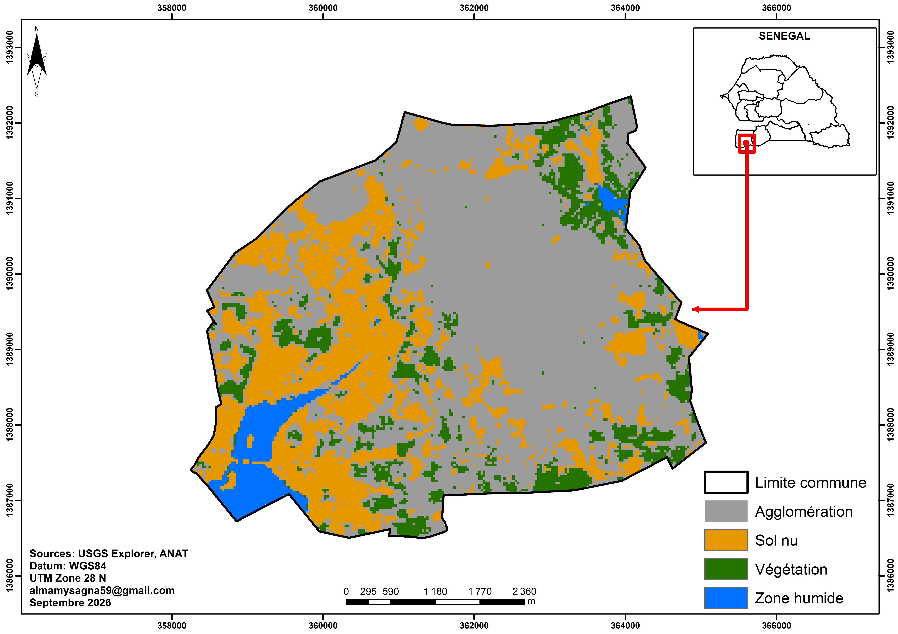
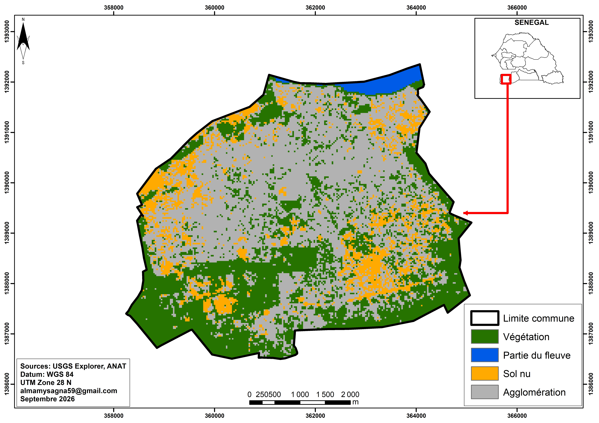
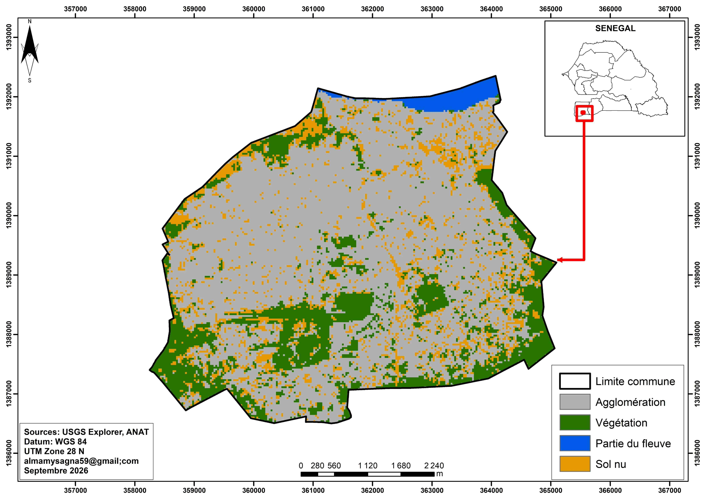
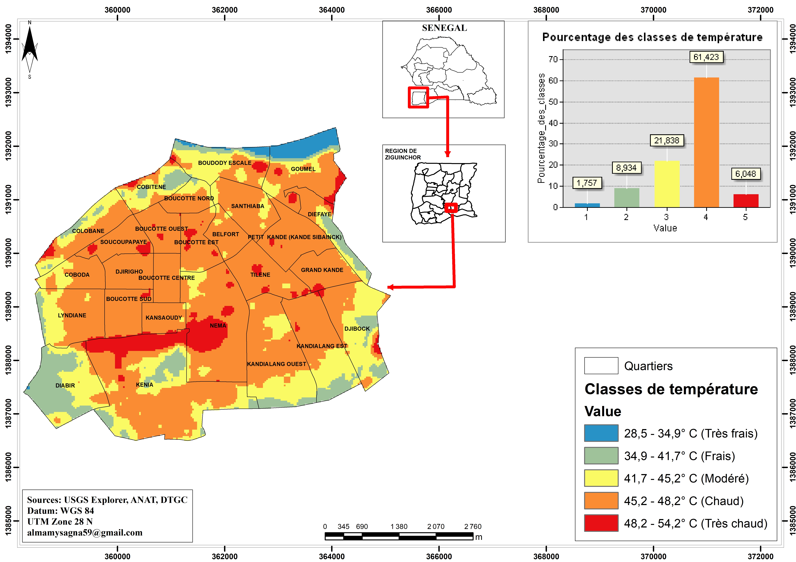

Vulnérabilité au changement climatique et résilience du système de santé à Ziguinchor
Mémoire de Master en Géographie, UCAD. Cartes utilisées dans le mémoire
Le mémoire
Ce travail étudie la vulnérabilité au changement climatique et la résilience du système de santé à Ziguinchor, dans le cadre du Master en Géographie (spécialité Environnement, Territoire, Population et Santé).
Il comprend une analyse spatiale de l'évolution de l'occupation du sol en 2005, 2015 et 2025, réalisée à partir d'images Landsat et de classifications supervisées.
Cartes
Cliquez sur une carte pour l'ouvrir en grand dans un nouvel onglet.



